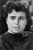
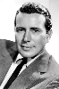
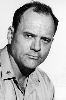

Country:United States, 134 minutes
Spoken languages:English
Genres:Crime, Drama
Director(s):Richard Brooks
Writer(s):Richard Brooks, Truman Capote
Video Codec:Unknown
Number: 2970


Certification:R
Storyline:
After a botched robbery results in the brutal murder of a rural family, two drifters elude police, in the end coming to terms with their own mortality and the repercussions of their vile atrocity.
Cast:   
Medium: Original DVD,
Loaned: No
Aspect ratio: Unknown